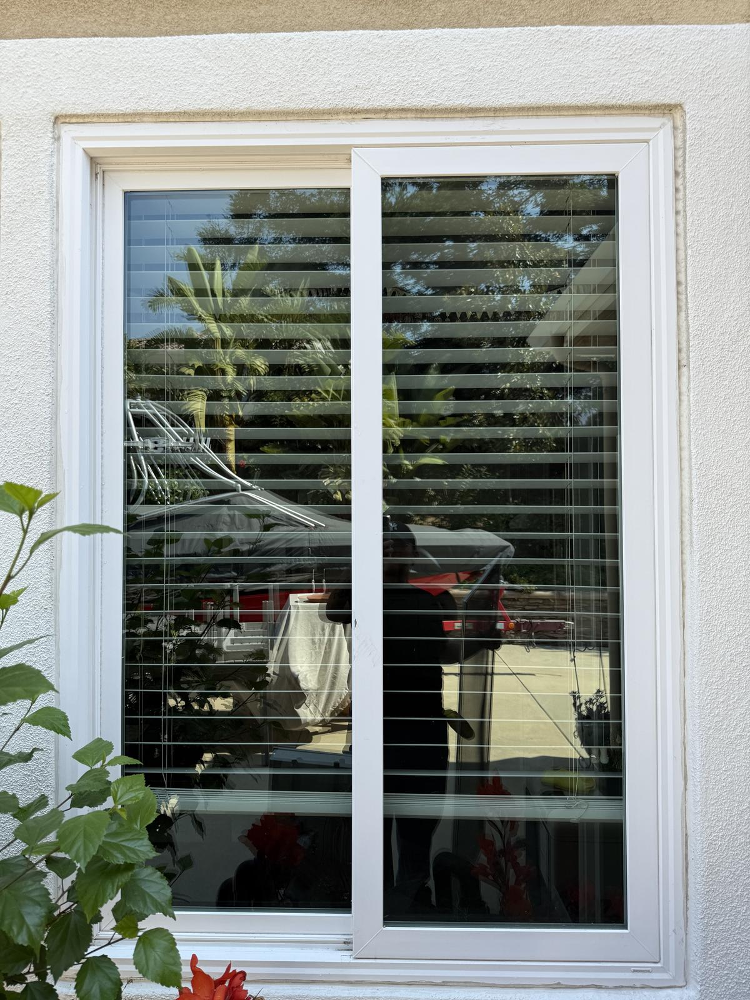
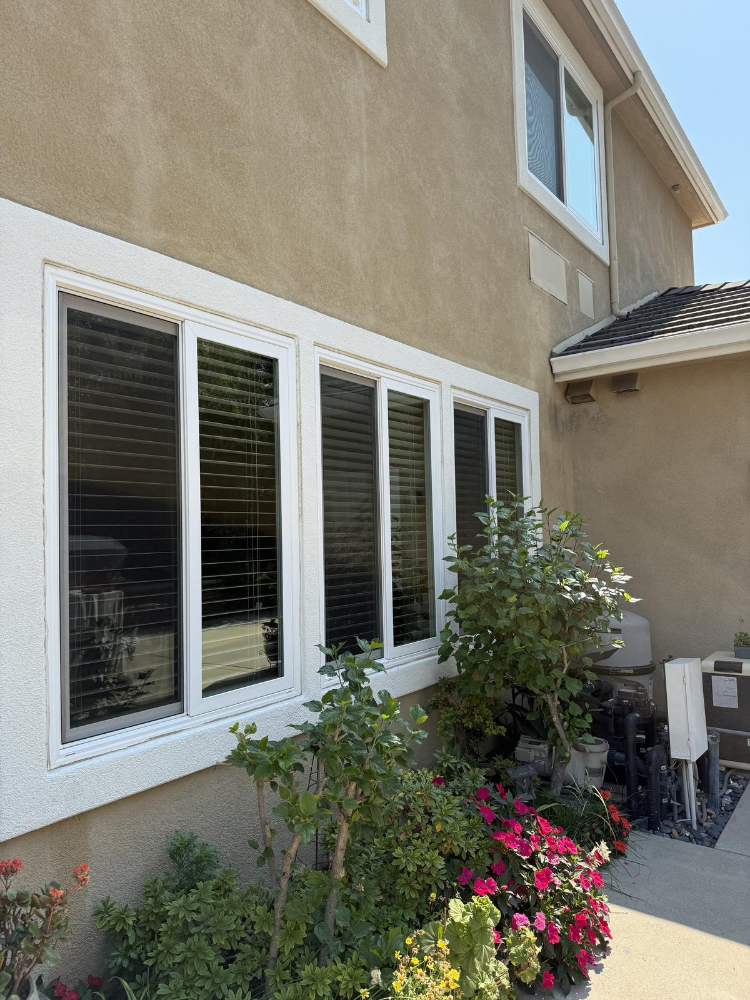
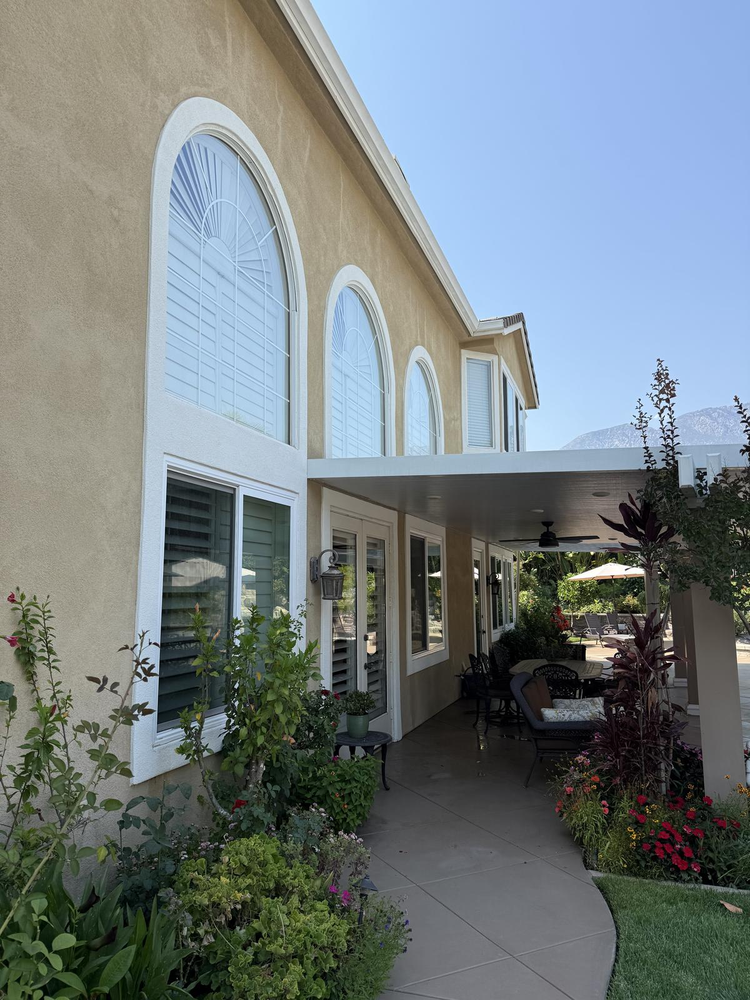

Home/Window Cleaning
★★★★★ 5.0 from 23 Google reviewsSee the world crystal clear.
Purified-water cleaning with screens, tracks and sills included — not an upsell. Serving Victorville, Hesperia, Apple Valley, Adelanto, Oak Hills and Phelan.
It's minerals and wind. Understanding both is why our cleanings last.
Exterior glass cleaned to a clear, streak-free finish — including the second story. Water-fed poles reach upper windows safely from the ground, ladders where the job calls for it.
Screens come off and get cleaned, tracks and sills are detailed. Included, not an upsell — because skipping them undoes the glass within a week.
Filtered, deionized water dries clear with nothing left behind. No soap residue, no water spots, no film for the next round of dust to stick to.



Interior cleaning is available as an add-on — worth doing at least once a year on the rooms you actually look out of.
If your glass has gone cloudy near the base, a standard wash won't fix it. That needs mineral restoration — a different process using a compound that lifts the deposit off the surface. It takes longer, costs more, and it's the only thing that works.
We'll tell you honestly which one your windows need before quoting — and we'll tell you if the etching has gone too deep to fully recover. Some glass is past saving, and you deserve to know that rather than pay for a treatment that disappoints.
Once it's clean, adjust your sprinklers. It's the single best thing you can do for your windows and it costs nothing.
Single story · two story from $249 · free quotes
Twice a year suits most High Desert homes — spring after the wind, fall before the holidays. Corner lots, homes near open land, and glass in sprinkler range do better on a quarterly rhythm. Torn screens? We re-mesh them on site while we're there.
Tell us a little about the house and we'll get right back to you — usually the same day. Prefer to talk? Call or text anytime.
Single-story exterior starts at $149, two-story at $249 — screens, tracks and sills included. Interior is an add-on. Hard water restoration is quoted after we see the glass, because the price depends on how far the etching has gone.
Yes — included in every exterior clean along with tracks and sills. Leaving grit in a screen undoes the window.
Hard water etching from sprinkler overspray. Standard cleaning won't remove it — it needs mineral restoration, and it's worth catching early. Once it's clean, adjust your sprinklers: best free thing you can do for your glass.
No. Purified, deionized water — it dries without spots and leaves no residue for dust to cling to.
Yes. Water-fed poles reach safely from the ground, with ladder work where needed. Two-story is standard for us, not a special request.
Twice a year for most High Desert homes — spring after the wind, fall before the holidays. Quarterly on corner lots, near open land, or where sprinklers hit the glass.
Not for exterior work, as long as gates are unlocked and pets are secured. Interior work needs someone there.